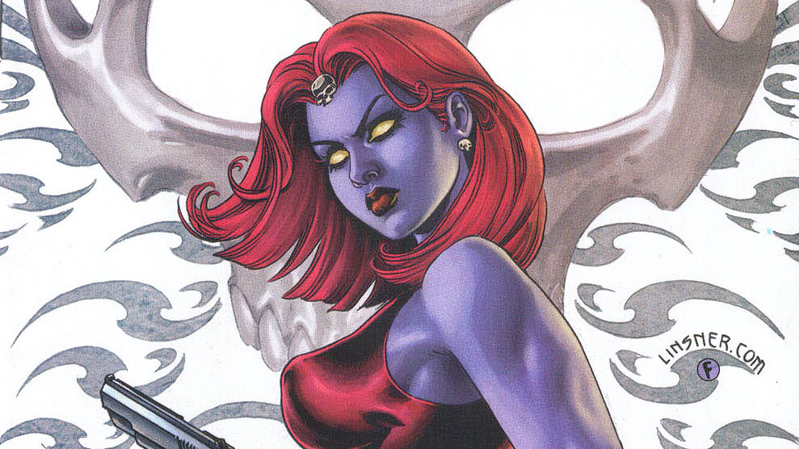

History
Supervillain & Antiheroine
A member of a subspecies of humanity known as mutants who are born with superhuman abilities, she is a shapeshifter who can mimic the appearance and voice of any person with exquisite precision.
Supervillain & Antiheroine
A member of a subspecies of humanity known as mutants who are born with superhuman abilities, she is a shapeshifter who can mimic the appearance and voice of any person with exquisite precision.
Raven Darkhölme
Depends on the persona she adopts
5'10"
1201bs
After her enhancement, Mystique has shown the ability to adapt her body depending on her situation at the time.
Mystique has the ability to enhance her strength, speed, agility, reflexes and senses.
Mystique's nature allows her to repair and regenerate herself from minor to near-death injuries in a short span of time, much faster than an ordinary human.
Mystique's nature also provides her with a natural defense against telepathic intrusion.
We are different. But we shouldn't be trying to fit into society. Society should aspire to be more like us.